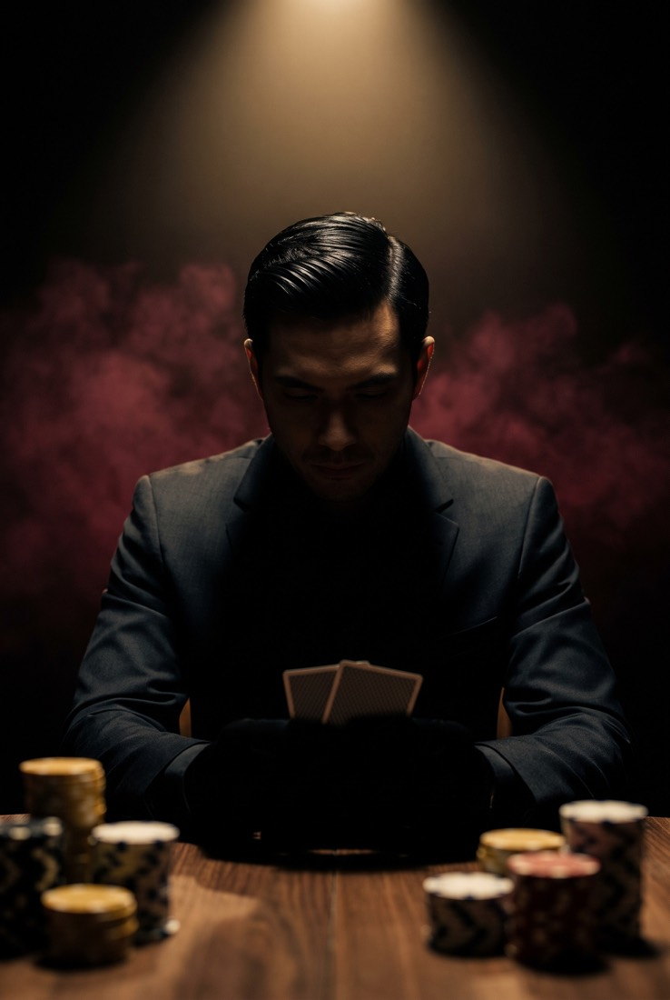
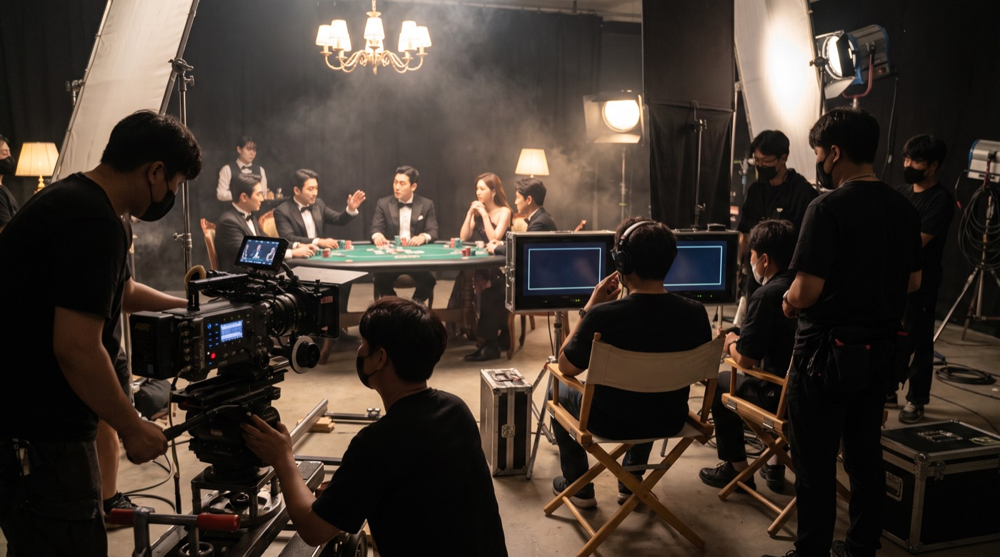
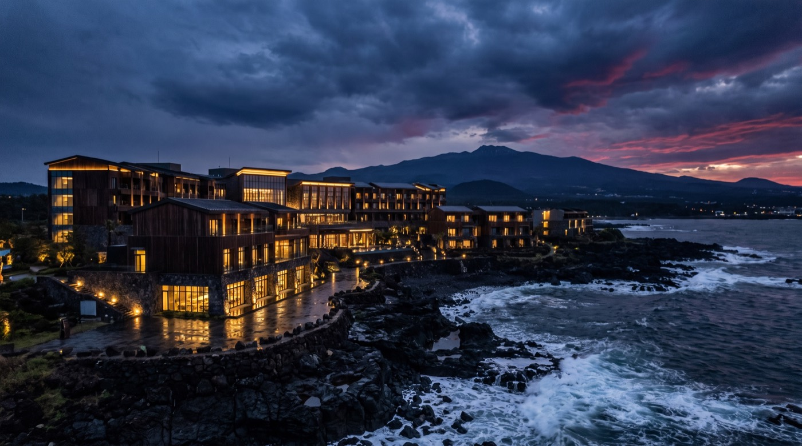
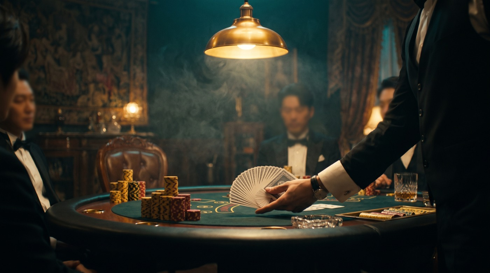
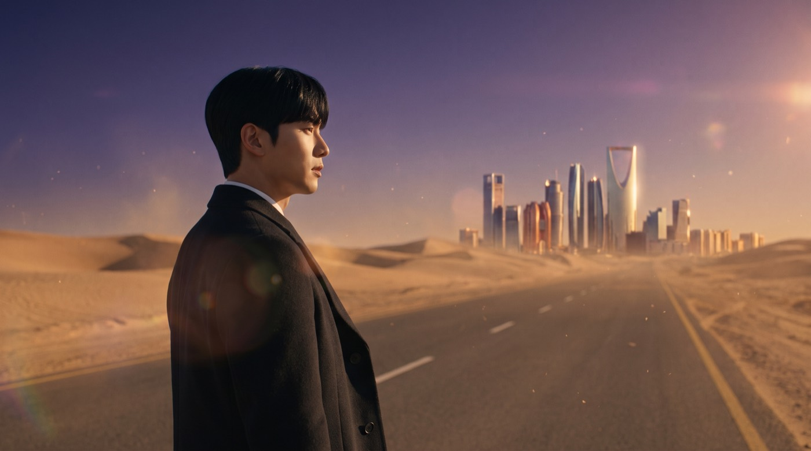

FORMAT
12 × 2 SEASONS
"끝나지 않은 승부, 게임은 다시 시작되어야 한다." 모든 걸 잃은 남자와 복수를 꿈꾸는 여자 — 판을 뒤집을 준비는 됐나.

21년 전, 대한민국을 멈추게 했던 그 승부가 돌아온다.
2003년 드라마 '올인'은 최고 시청률 47.7%로 한 시대를 멈춰 세웠다. 그 전설의 IP가 시즌제 24부작으로 돌아온다 — 세계 포커 챔피언을 꿈꾸던 남자와 모든 것을 빼앗긴 여자가 화려한 카지노 판 위에서 속고, 속이고, 배신당하고, 그래도 다시 손을 잡는 이야기.
최완규 작가(올인·허준·주몽)의 카지노 승부극. 무대는 제주의 검은 바다에서 라스베가스, 그리고 사우디의 사막까지 — 도박의 올인과 사랑의 올인이 겹쳐지는 순간, 이 드라마의 심장이 뛴다.
세계 포커 챔피언을 꿈꾸던 밑바닥 인생. 모든 것을 잃고 고향 제주로 돌아와, 인생을 건 마지막 게임을 시작한다.
평범한 딜러였던 여자. 오빠의 죽음과 비밀의 노트를 쥔 채, 판을 지배하는 자들에게 복수의 베팅을 준비한다.
시장은 겨울, 정상은 여름이다. 한국 드라마 제작 편수가 급감한 지금, 글로벌 플랫폼은 검증된 대형 IP에만 지갑을 연다. 그리고 한국 콘텐츠는 넷플릭스에서 미국 외 세계 1위 — 정상급 K드라마 한 편의 보상은 역대 최대다. 낫오버는 그 정상을 노린다.
감동은 우연이 아니라 설계다. 12부의 감정 고도를 먼저 짓고 사건을 얹는다 — '보는 드라마'가 아니라 '우는 드라마'. 장르는 문을 열고, 감정이 세계를 정복한다.
특정 플랫폼에 목매지 않는다. 글로벌 입찰·국내외 동시 계약·지역 분할까지 4중 트랙 판매 구조 — 어느 플랫폼이 문을 열어도 걸어 들어간다.
사우디 촬영 인센티브 최대 60%, 시즌당 4회분 중동 로케이션, 현지 미디어 그룹 협력 — K드라마가 처음 밟는 땅에 첫 깃발을 꽂는다.
드라마는 시작일 뿐. 시즌2와 스핀오프, 웹툰·OST·제주 세트장 관광까지 — 한 편이 아니라 하나의 세계를 만든다.




권리 정비 · 대본 리라이팅 · 랜딩페이지 오픈
주연 캐스팅 패키지 · 글로벌 판매 협상 · 중동 계약
제주 세트장 개시 · 글로벌 로케이션 · 티저 공개
시즌1 동시공개 · 시즌2 촬영 · IP 확장 가동
"인생의 올인은,
사랑하는 사람이다."
티저 공개·캐스팅 발표 소식을 가장 먼저 받아보세요.
투자·제휴 문의 — EYE ON ENTERTAINMENT